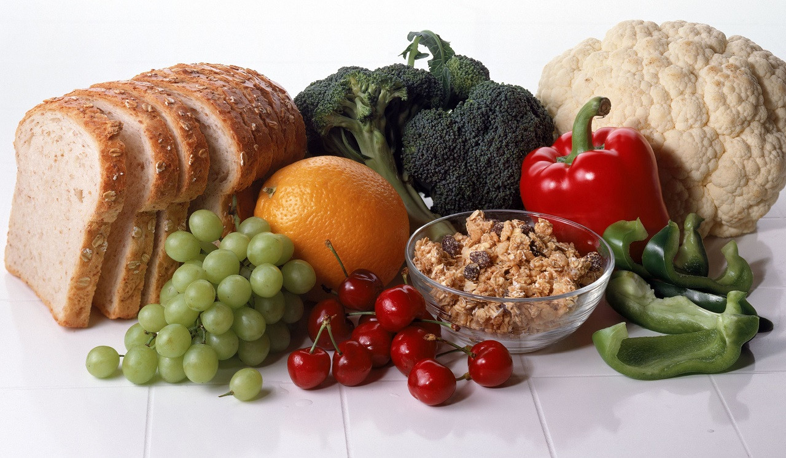
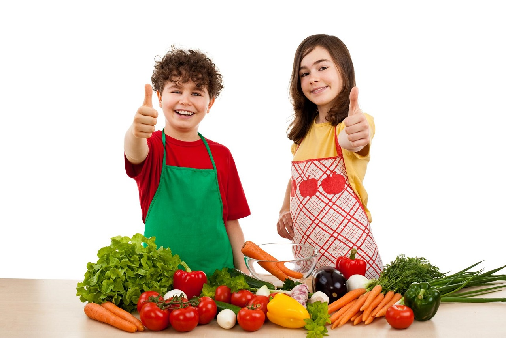
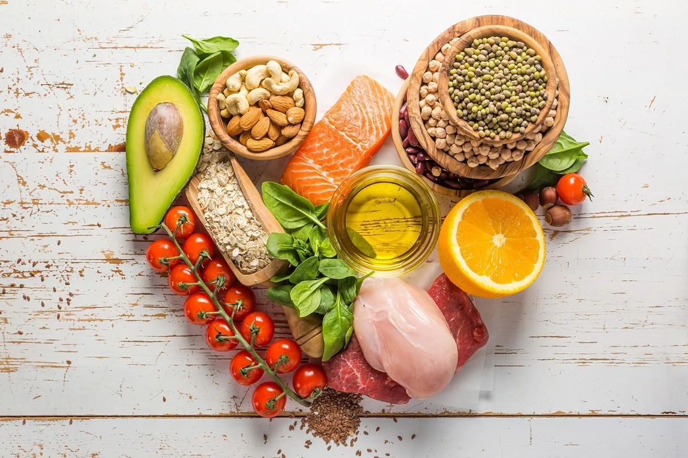
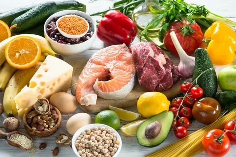

Основы здорового питания, или как правильно питаться.
При составлении меню здорового питания следует помнить о нескольких общих правилах: во-первых, принимать пищу нужно часто и маленькими порциями. Удобнее всего завести себе небольшую тарелку, в которую помещается порция размером с пригоршню. Не нужно бояться голода! Здоровый образ питания предполагает 5-6 приемов пищи за день. Хорошо также приучить себя питаться в одно и то же время – это стабилизирует работу желудка и будет способствовать похудению.
Второе важное правило – помним о калориях. Нет необходимости скрупулезно высчитывать их в течение всей жизни каждый раз после еды, достаточно неделю-другую последить за своим питанием, и привычка автоматически «прикидывать» калорийность пищи появится сама собой. Норма калорий у каждого своя, узнать ее можно, например, воспользовавшись специальным калькулятором, который легко найти в Интернете. К примеру, женщине 30 лет, весом 70 кг при росте 170 см и небольшой физической активности в сутки необходимо около 2000 ккал. Чтобы сбросить вес, нужно употреблять 80% калорий от нормы, то есть в нашем примере около 1600 ккал в день. Дополнительно урезать рацион нет никакого смысла – организм просто затормозит обмен веществ, да и вреда от такой диеты больше, чем пользы.


Правило третье – соблюдаем баланс между «доходами» и «расходами», то есть той энергией, которая тратится организмом на основной обмен, работу, занятия спортом, и калорийностью питания. Еда включает в себя четыре основных составляющих: белки, жиры, углеводы и пищевые волокна – все они необходимы нашему организму. Вопрос только в том, какие именно из них (жиры и углеводы бывают разными), в каких количествах и пропорциях употреблять. Ориентировочные рекомендованные показатели – 60 г жиров, 75 г белков, 250 г углеводов и 30 г волокон. Четвертое правило – пейте воду. Зачастую мы не хотим есть, просто наш организм принимает нехватку жидкости за голод и заставляет нас съедать то, что на самом деле не нужно.
И пятое правило – выбирайте продукты с умом. Читайте этикетки, состав и калорийность продуктов, исключите из рациона фастфуд, майонезные соусы, продукты с химическими добавками, консервантами, красителями. Вы должны знать, что вы едите, и тогда путь к красоте и здоровью станет быстрым и приятным.
